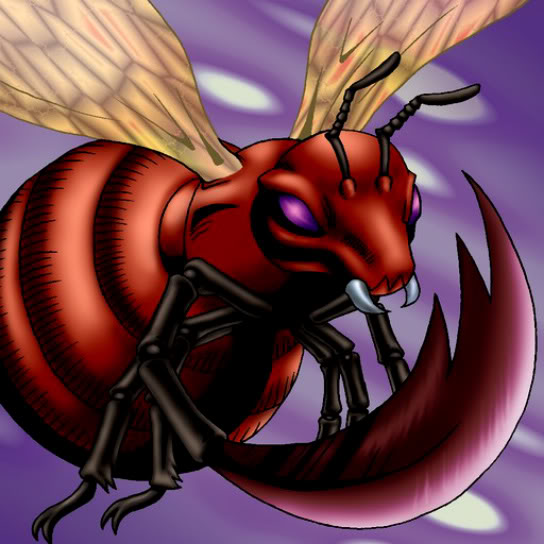

Bladefly

Description: "While this card is face-up in the defense position, all WIND monsters gain a 500-point power-up bonus."
STATS
ATK: 600
DEF: 700DECK COST
Deck Cost per Card: 18EFFECT NOT IMPLEMENTED
Fusion List (3 Possible Fusions)
- Bladefly + Armed Ninja = Cockroach Knight
- Bladefly + Eyearmor = Cockroach Knight
- Bladefly + Swordsman from a Foreign Land = Cockroach Knight